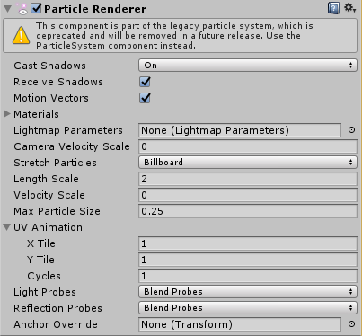

Particle Renderer (Legacy)
The Particle Renderer renders the Particle System on screen.

Properties
| Property: | Function: |
|---|---|
| Cast Shadows | If enabled, this allows the Mesh to cast shadows. |
| Receive Shadows | If enabled, this allows the Mesh to receive shadows. |
| Motion Vectors | If enabled, the line has motion vectors rendered into the Camera motion vector Texture. See Renderer.motionVectors in the Scripting API reference documentation to learn more. |
| Materials | Reference to a list of Materials that are displayed in the position of each individual particle. |
| Light Probes | Probe-based lighting interpolation mode. |
| Reflection Probes | If enabled and reflection probes are present in the Scene, a reflection Texture is picked for this Particle Renderer and set as a built-in Shader uniform variable. |
| Probe Anchor | If defined (using a GameObject), the Renderer uses this GameObject's position to find the interpolated Light Probe. |
| Camera Velocity Scale | The amount of stretching that is applied to the Particles based on Camera movement. |
| Stretch Particles | Determines how the particles are rendered: |
| Billboard | The particles are rendered as if facing the Camera. |
| Stretched | The particles are facing the direction they are moving. |
| SortedBillboard | The particles are sorted by depth. Use this when using a blending Material. |
| VerticalBillboard | All particles are aligned flat along the X/Z axes. |
| HorizontalBillboard | All particles are aligned flat along the X/Y axes. |
| Length Scale | If Stretch Particles is set to Stretched, this value determines how long the particles are in their direction of motion. |
| Velocity Scale | If Stretch Particles is set to Stretched, this value determines the rate at which particles are stretched, based on their movement speed. |
| UV Animation | If X, Y or both are defined, the UV coordinates of the particles are generated for use with a tile animated texture. See Animated Textures, below. |
| X Tile | Number of frames located across the X axis. |
| Y Tile | Number of frames located across the Y axis. |
| Cycles | How many times to loop the animation sequence. |
Details
Particle Renderers are required for any Particle System to be displayed on the screen.

Choosing a Material
When setting up a Particle Renderer, it is very important to use an appropriate Material and Shader that renders both sides of the Material. Unity recommends using Particle Shaders with the Particle Renderer.; most of the time you can simply use a Material with one of the built-in Particle Shaders. There are some premade Materials in the Standard Assets > Particles > Sources folder that you can use.
Creating a new Material is easy:
- In the Unity menu bar, go to Assets > Create > Material.
- In the Inspector window, navigate to New Material and click the Shader dropdown. Choose one of the Shaders in the Particles group (for example: Particles > Multiply).
- To assign a Texture, navigate to the grey box in the Inspector window containing the text None (Texture) and click the Select button to launch a pop-up menu containing the Textures available.
Note that different Shaders use the alpha channel of the Textures slightly differently, but most of the time a value of black in the alpha channel makes it invisible, and a value of white displays it on screen.
Distorting particles
By default, particles are rendered billboarded (that is, as simple square sprites). This is useful for smoke, explosions, and most other particle effects. See Billboard Renderer for more information.
Particles can be made to stretch with the velocity. Length Scale and Velocity Scale affects how long the stretched particle is. This is useful for effects like sparks, lightning or laser beams.
Sorted Billboard can be used to make all particles sort by depth. Sometimes this is necessary, mostly when using Alpha Blended particle shaders. This can be resource-demanding and affect performance; it should only be used if it makes a significant quality difference when rendering.
Animated textures
Particle Systems can be rendered with an animated tile Texture. To use this feature, make the Texture out of a grid of images. As the particles go through their life cycle, they cycle through the images. This is good for adding more life to your particles, or making small rotating debris pieces.